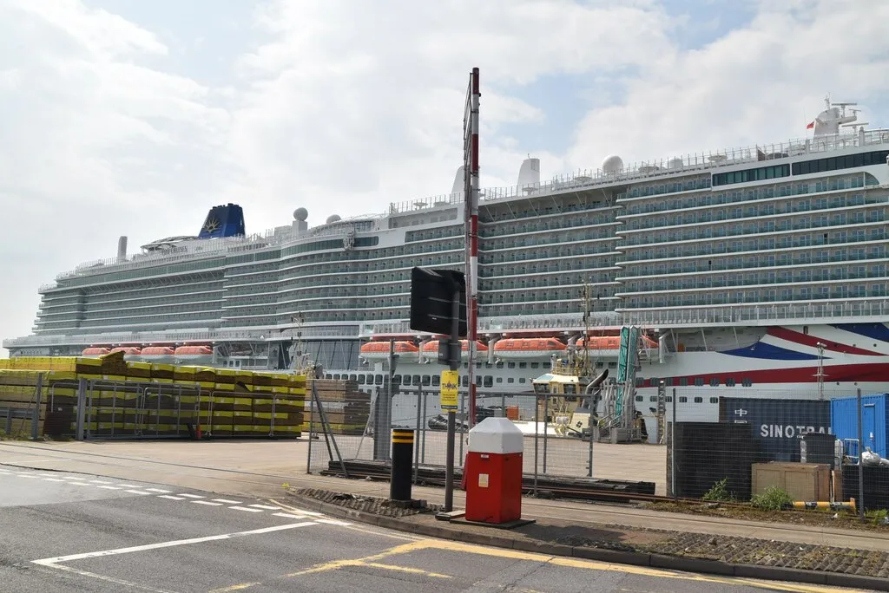
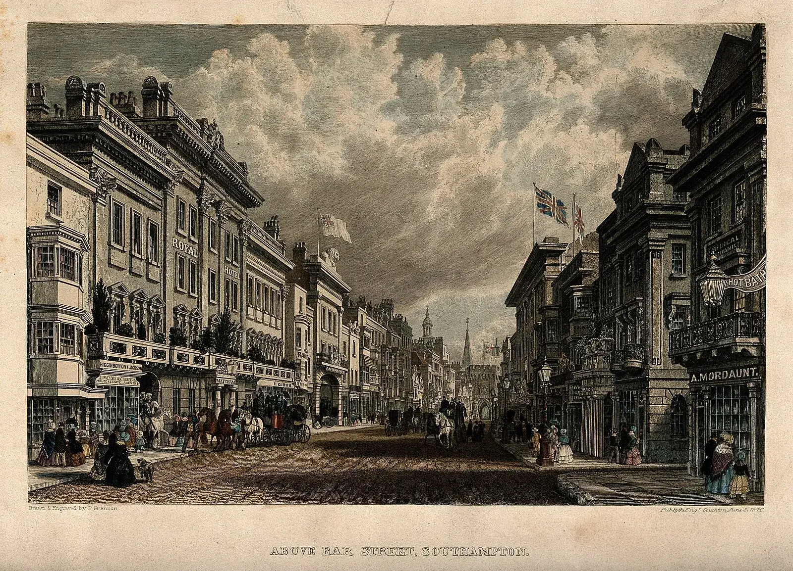
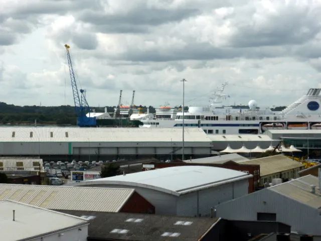
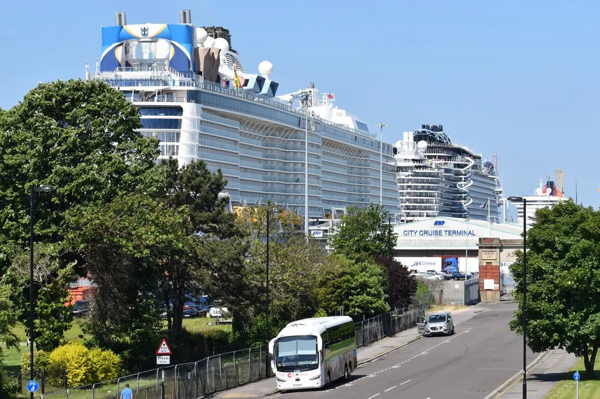
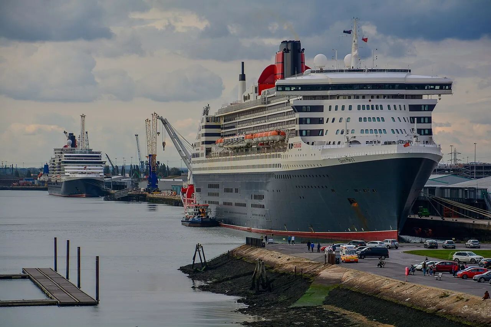
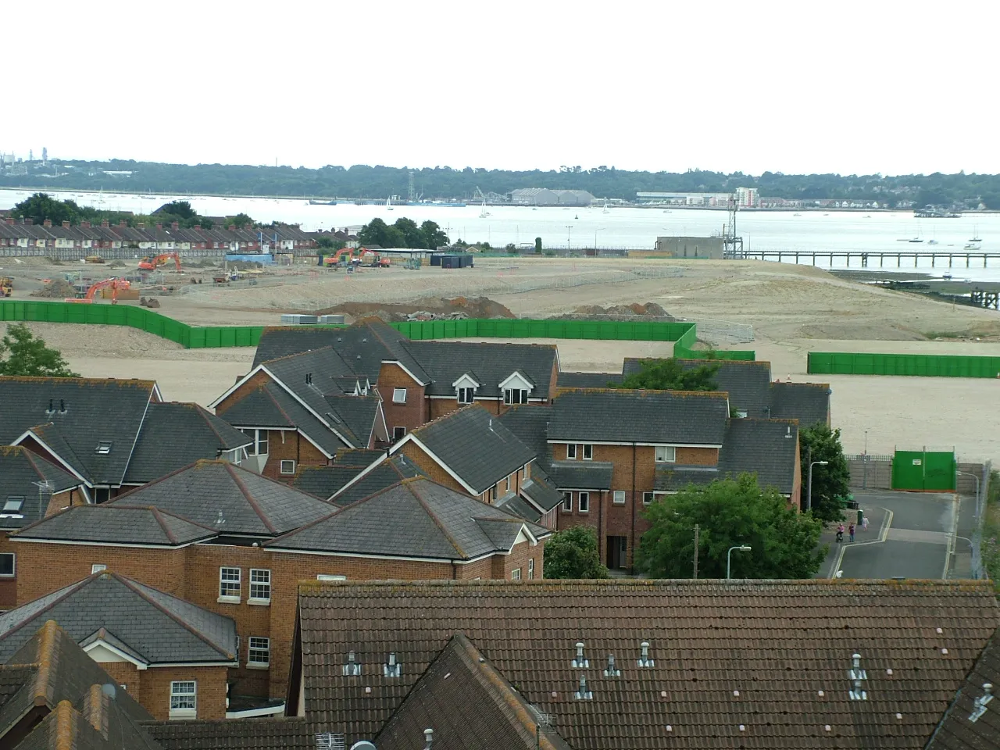

Last reviewed: February 2026
My Logbook: Southampton — Where the Titanic Sailed & the Mayflower Dreamed
Southampton is where so many of my European and transatlantic adventures begin and end, and I genuinely love it — it's the busiest cruise port in the entire United Kingdom, welcoming over three million passengers annually. This port has been the departure point for legendary voyages: the Mayflower sailed from here bound for America in 1620, and the QE2 called Southampton her home port for decades. My perfect pre-cruise day starts at the SeaCity Museum's Titanic exhibit — Southampton was the Titanic's home port, and walking through those galleries is chilling and beautifully done. Then I wander the medieval Bargate and some of the most complete Medieval city walls in the UK. Fish and chips at The Rockstone with the smell of malt vinegar and sea air drifting through the window.

The SeaCity Museum is where history becomes something you feel in your chest — interactive Titanic exhibits include a painstakingly accurate replica of a first-class cabin, and you can stand at the very spot where the Titanic departed: Berth 44, Ocean Dock Gate 4, on April 10, 1912. Nearly 500 of the Titanic's victims were Southampton citizens, and of the 724 crew members who sailed that day, only 175 returned home. I walked through the crew quarters recreation slowly, reading the names on the walls, touching the cold metal railing. Afterward, I found the White Star Tavern — the former White Star Line ticketing office — and ordered a pint in a room where Titanic crew members bought their tickets. The wooden floors creaked the same way they would have in 1912. The Grapes pub, just down the street, served those same crew members their last pints before departure. These 12th-century churches and Medieval walls hold stories that make you feel the weight of centuries.
Day trips from Southampton are gloriously easy. Stonehenge is just 50 miles away — those 4,000-year-old standing stones (UNESCO World Heritage since 1986) rise from the Salisbury Plain like ancient teeth. Winchester Cathedral is a 20-minute train ride — I sat in the nave and listened to the silence, feeling the cool stone beneath my hands. Portsmouth Historic Dockyard with HMS Victory and the Mary Rose Museum is essential for anyone who loves naval history. London is only 70 miles away — about 80 minutes by direct train from Southampton Central.
The New Forest was an unexpected highlight. I expected a pleasant park, yet what I found was something wilder — ancient woodland where ponies roam freely across open heath, thatched cottages tucked behind hedgerows, and a silence that felt almost startling after the bustle of the port. I stopped at a village pub for a ploughman's lunch (£9.50) and sat in the garden watching swallows loop between oak trees. It was the opposite of everything cruise travel usually is — no schedule, no announcements, just stillness. However, the 25-minute taxi ride back to the terminal reminded me that these two worlds live right beside each other, and that's what makes Southampton special.
Southampton feels proper British — polite, green, and effortlessly charming. It's not London's grandeur, but that's exactly the point. This is a working port city with real history and real warmth, where every cobbled street and ancient wall whispers stories of sailors, explorers, and ordinary people who changed the world.


Looking back, what Southampton taught me is that departure points hold their own kind of beauty. I realized that the places where journeys begin carry every emotion at once — excitement and worry, hope and goodbye. The Titanic's crew walked these same streets. The Mayflower passengers stood on these same quays. Every time I board a ship here, I carry a little of their courage with me, and I'm grateful for it.
The Cruise Port
Southampton is the UK's busiest cruise port, handling over three million passengers annually across four modern terminals: Ocean Terminal, Mayflower Terminal, City Cruise Terminal, and Horizon Cruise Terminal. Each terminal serves different cruise lines — check your booking for which berth you need. The City and Horizon terminals are closest to the city centre (10–15 minute walk), while Ocean Terminal (where Cunard and P&O often dock) is farther out and typically offers free shuttle service. Terminal facilities include cafés, shops, and luggage drop-off.
Southampton Central railway station is about a 20-minute walk from the nearest terminals, with direct trains to London Waterloo (80 minutes, from £20). Taxis from the station to any terminal run £5–8. The port area is generally flat and wheelchair accessible, with step-free access at all four terminals. Parking is available at all terminals from around £70 per week for pre-booked long-stay.
Getting Around Southampton
Four modern terminals — all provide free shuttles if needed, but City and Horizon terminals are within easy walking distance of the city centre (10–15 minutes) approximately 9 football fields, 32 blue whales end-to-end, or 693 emperor penguins stacked skyward. The city centre is compact and walkable once you arrive.
- City Centre: 10–15 minute walk or free shuttle from most terminals
- Stonehenge: Ship excursion (£60–90 per person with guaranteed return) or independent via train to Salisbury (25 min, £12 return) plus Stonehenge Tour Bus (£18)
- Winchester: Train fare from Southampton Central is £8 return (20 minutes)
- Portsmouth: Train 50 minutes, or ship excursion packages around £50 per person
- London: Direct train 70–90 minutes (from £20 if booked ahead)
Local buses serve the city centre (single fare £2, day pass £4.50), and taxis are readily available at all terminals — expect £5–8 to the city centre, £15–20 to the train station area. The waterfront promenade and city centre pavements are wheelchair-friendly with dropped kerbs and tactile paving. The Bargate and medieval walls area has some cobblestone surfaces that may be challenging for wheelchair users. The classic British weather keeps everything green — a light jacket and an umbrella mean you're ready for anything Southampton throws at you.
Weather & Best Time to Visit
Southampton Port Map
Interactive map showing cruise terminals and Southampton attractions. Click any marker for details.
Excursions & Activities
Southampton is a rare port where day trips rival or surpass what you find in the city itself. The ship excursion to Stonehenge is the headline draw — coaches depart the terminal within minutes and most tours include a guaranteed return to the pier with time to spare. Independent travelers can take the train to Salisbury (25 minutes, £12 return) and then the Stonehenge Tour Bus (£18 round trip), but the timing is tight on a port day so book ahead to lock in early morning departures.
- Stonehenge (ship excursion, £60–90): The most popular option. UNESCO World Heritage Site with 4,000-year-old standing stones rising from Salisbury Plain. The visitor centre has a reconstructed Neolithic village. Ship excursion coaches leave directly from the terminal and guarantee you back before all-aboard — or go independent via train to Salisbury plus the Stonehenge Tour Bus if you prefer flexibility.
- Portsmouth Historic Dockyard (£40–50 or independent): HMS Victory (Nelson's flagship at Trafalgar), the Mary Rose Museum (Henry VIII's recovered warship), and HMS Warrior. The full-day ticket fee covers all attractions. Train fare from Southampton Central is about £15 return (50 minutes), or ship excursion packages handle transport. Allow 3–4 hours minimum.
- Winchester Cathedral & city walk (independent, £8 train return): One of Europe's longest Gothic cathedrals, with Jane Austen's grave and medieval illuminated manuscripts. The Great Hall houses the legendary Round Table. A 20-minute train ride makes this an easy half-day independent trip.
- SeaCity Museum — Titanic Exhibition (£8–10 entry cost): Interactive exhibits, first-class cabin replica, and the actual Berth 44 departure point. Walking distance from the cruise terminals. Allow 2 hours. Deeply affecting and well worth the price of admission.
- New Forest National Park (ship excursion £45–65 or taxi): Ancient woodland with wild ponies roaming freely, thatched-roof villages, and scenic cycling trails. A 25-minute drive from the port. Ship excursions typically include a pub lunch and guided walk. Book ahead for cycling hire in summer months.
- London day trip (independent, from £20 train): Direct trains from Southampton Central reach London Waterloo in 80 minutes. Enough time for the Tower of London, Westminster, or a West End show if you start early. Independent travelers should catch the first available train and plan their return carefully — the pier waits for no one.
For port days with limited time, the SeaCity Museum and medieval walls walk is the best combination — both are within walking distance and give you the full Southampton story in three to four hours. Whatever you choose, the key is matching your ambition to your ship's schedule. The independent options here are genuinely excellent, but Stonehenge timing is unforgiving if you miss a connection.
Depth Soundings — Southampton's Deeper Story
Southampton's maritime history runs deeper than almost any port in the world. The Romans established a settlement here called Clausentum in the first century AD, and the natural double tide of Southampton Water — caused by the Isle of Wight deflecting tidal flows — made this a remarkably sheltered natural harbour. That geographical advantage shaped everything that followed.
The Mayflower and the Speedwell departed Southampton on August 15, 1620, carrying the Pilgrims bound for the New World. The Speedwell leaked and they had to turn back to Plymouth, but Southampton remembers its role in that founding voyage with a memorial on the Town Quay. The medieval wool trade made Southampton wealthy, and the surviving town walls — among the most complete in England — date from that prosperous era. The Bargate, the fortified medieval gatehouse, still stands in the city centre as it has since the 12th century.
The Titanic's connection to Southampton is not just a tourist story — it was a civic tragedy. Of the 1,517 people who died when the ship sank on April 15, 1912, nearly 500 were Southampton residents. Entire streets in the Chapel neighbourhood lost their men. The city erected memorials, but the wound shaped Southampton's identity for generations. During World War II, Southampton was heavily bombed during the Blitz because of its port and Supermarine Spitfire factory — the aircraft that helped win the Battle of Britain was built here. The modern port emerged from that reconstruction, and today it handles over two million cruise passengers annually while remaining a working container port and ferry terminal.
Photo Gallery



Image Credits
- southampton-1.webp: WikiMedia Commons (CC BY-SA)
- southampton-2.webp: WikiMedia Commons (CC BY-SA)
- southampton-3.webp: WikiMedia Commons (CC BY-SA)
- southampton-4.webp: WikiMedia Commons (CC BY-SA)
Images sourced from WikiMedia Commons under Creative Commons licenses.